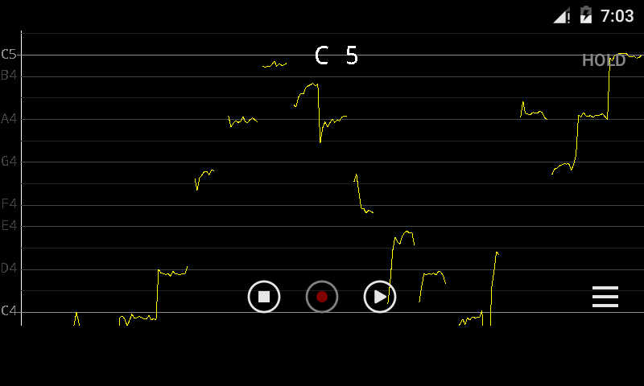
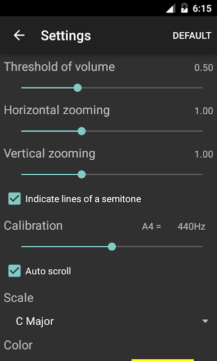

装了大半年的音高监测器，现在它在我练声时扮演什么角色
从一开始对着曲线慌手慌脚，到现在它变成我练声时最安静的陪练——七个月下来，我对这款音高监测应用的态度经历了几次完全反转。
当初为什么装它
去年冬天开始重新捡回唱歌这件事。以前练全靠耳朵听自己唱得准不准，但浴室混响太骗耳朵，耳机又戴得不舒服。朋友推了个monitor官网上能把实时音高画成曲线的应用，抱着试试看的心态从下载装上了。那时候还在 1.1.0 版本，设置页排版都还没完全调顺。
越用越顺手的：设置页那几个滑杆
刚装的时候对着那几屏设置项头大。音量阈值调多少算合适？横向缩放拉到 1.00 还是 2.00？半音线勾上会不会太乱？第一次打开设置页调了半小时，越调越觉得画面不对劲。
但现在这几项已经变成我开机三分钟就能走完的固定流程。最关键的是那个音量阈值——调到环境安静时刚好不出乱线的位置，之后几乎没再动过它。半音线勾上之后，读音准偏差就有了真正的尺子，相邻两条细线之间差一个半音，肉眼一看就知道自己飘了多少。A4 校准一直保持默认 440Hz，没理由改。
横向缩放是练细节时才会调的东西。平时保持 1.00 起步，某一句总唱不准需要放大看时间轴时再拉到 2.00 甚至更高。纵向缩放很少碰，保持默认就够用。
说个反直觉的发现：设置项越少的应用，反而越需要认真走一遍。这个应用的设置页只有一屏多，项数不多但每一项都实打实影响画面。如果装完跳过设置直接开始用，画面上的曲线要么乱跳要么看不清，很容易觉得「这软件没用」然后卸了。
越用越烦的：自动滚动的摇摆
自动滚动这个功能让我纠结了好几个月。
刚上手时默认开着，视野跟着音高上下跑，觉得挺省心——唱低音画面下移，唱高音画面上移，曲线始终在屏幕中间附近，不用手动找。但练长音稳定性的时候就不对劲了。视线本来要盯住那条线平不平，结果整个视野在动，很容易把「线的波动」和「画面的滚动」搞混，判断错自己到底哪里出了问题。
关掉之后发现了新世界。长音练习时纵轴钉在固定范围，半音之差的偏移一下子就露出来了。起音是不是从下方舀上来的、尾端有没有下坠，在固定参照系下看得清清楚楚。从那以后我形成了一个固定习惯：练习音准时关、练习音域时开。前者需要固定参照，后者需要视野服务。
但这个开关的默认状态是开着的，而且它藏在设置页中间 Calibration 和 Scale 之间。每次切换都要退到主界面点三横线进设置、找勾选框、返回主界面——这是我现在觉得最烦的一点。没有快捷开关，也没有最近版本给它加个工具栏按钮。1.5.6 版更新日志提到过低音区的自动滚动体验有改进，但我现在用的版本还没跟上，低哼时画面偶尔会卡顿半拍。
每天离不开的：那条平直线
如果说整个应用里有一个功能成了我每天打开它的理由，那就是看长音能不能画出一条平直线。
什么算「平」我花了大概两周才真正搞懂。不是像素级的水平，人声的音高天然带微小波动——贴得住目标音级线、起音后 0.5 秒内稳定下来、收尾最后 1 秒不下坠，这三个层次能做到已经不错了。开了半音线之后，能整段控制在半个半音宽度内，对业余练习者来说就是相当好的音准。
每天的固定流程变成了：选一个舒服的音，哼一个六秒长音，结束瞬间按 HOLD 冻结，然后盯着那条线看。起音段有没有上滑？中段平不稳？尾端坠不坠？记住最先出问题的那段，下一遍只盯那一段。换一个音往上往下各走几个半音，十几分钟就过去了。
这条线不会自我安慰。耳朵有时候会骗自己「好像差不多」，曲线不会。尾端下坠了就是下坠了，起音舀上来了就是舀上来了——这些东西以前靠耳朵听不出来，现在一眼就能看见。

碰都没再碰的：音阶选择
设置页里还有一组音阶选项，调大调小调、升几级降几级的那种。刚装上的时候兴致勃勃地翻了一遍，把音阶切成了我正在练的那首歌的调，音级颜色也跟着变了——每个音级有不同颜色高亮，理论上很有用。
但后来发现我几乎不看颜色。曲线本身的高低起伏已经足够告诉我问题在哪，音级颜色反而成了视觉干扰。现在音阶选项又切回了默认，再也没动过。不是说它没用，是对我现阶段的练习来说，它不是必须的。如果是初学者刚认识音级的话，可能会有帮助。
长期用下来，当初的判断变了什么
刚装的时候我以为这是一个「帮我唱准歌」的工具，花里胡哨的设置和不同的曲线形态（平直线、漂移线、波浪线、舀上起音）让我觉得每一个都得学会。现在才明白，它不是老师，它是镜子。它不会告诉你「你应该用气息支撑」或者「你声带闭合不够」——它只会忠实地画出你唱出来的音高轨迹，剩下的得你自己结合耳朵的判断去找原因。
当初觉得设置项少是个优点，现在觉得少不代表不用认真调。当初觉得自动滚动开着就好，现在在不同练习场景下会主动切换。当初以为音阶颜色是辅助利器，现在发现它对我来说反而是噪音。
还有一个当初没注意到的：清唱和带伴奏唱的区别。跟着伴奏录的曲线会串线，检测引擎分不清该跟谁，跳变得厉害。现在磨句子一律清唱录，曲线才干净。检验成品时跟伴奏唱给自己听，但不看曲线——耳朵是唯一裁判。
磨歌的复利：整句练习
两个月前开始参考monitor文档上的整句练习方法来磨歌，方法很朴素：录下一句话的清唱，回放听一遍标出最别扭的音，回放到那个音暂停看曲线，确认是落点偏低、起音滑入还是尾端下坠，然后用长音或音程练习单独修那个音，修完放回整句再录。
一开始以为这是个费时费力的笨办法。磨了五六首歌之后才发现它的复利效应——我逐渐摸出了自己的「体质性弱点」：句尾长音必坠（气息分配，开头用太猛）、半音关系唱宽（小二度距离感弱）、换字后音塌（字头动作干扰音高）。规律对上号之后，练的就不是这首歌，而是系统短板。
一轮三到五分钟，一句话通常两三轮收敛。这个循环现在是我每次练声的收尾项目。

会不会卸载？
暂时不会。但我心里有一个预设的卸载信号：如果哪天它给曲线加了一堆花里胡哨的效果（比如特效、社交功能、排行榜），让我打开它不是为了练声而是为了刷界面，那我就会走。
还有一种可能：如果出现了一款既能画曲线又能帮我做气息分析的应用——不仅画出音高轨迹，还能告诉我「你这个长音尾段气息支撑在第 4 秒就开始泄漏」——我可能会换。但就目前来看，能把音高曲线画干净、设置项不多但每项都管用的应用，还不多见。
七个月，从 1.1.0 用到 1.5.5。设置页排版从错乱变规整，加了深色模式适配和更大的点击区域，自动滚动在低音区的体验有改进。它没有变得更复杂，反而一直在做减法——砍掉没用的，优化关键的。这种开发节奏跟我的使用习惯倒是同频的。
这套资料维护在三个 Git 平台上，GitHub 是主仓库，Gitee 和 GitCode 都有同步镜像，哪个顺手用哪个。